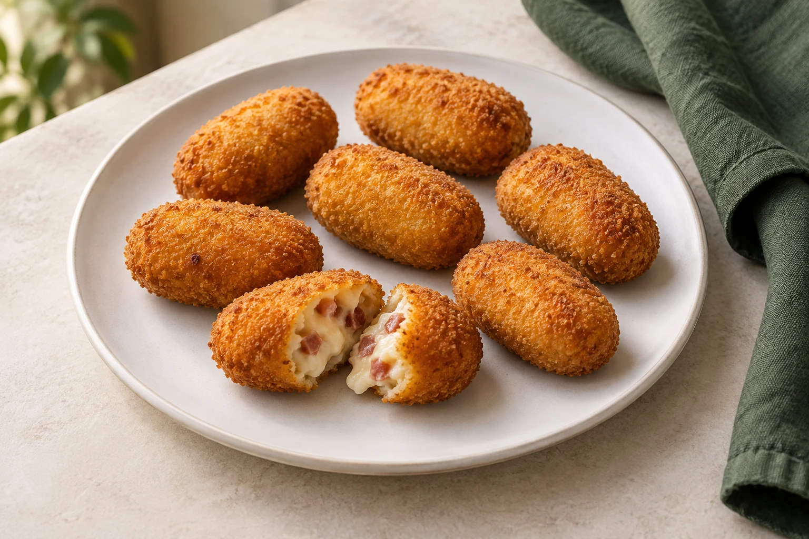

01
Tapas
Sam de pato vietnamita
4.00 €Sam de atún
5.00 €Sam de salmón y mango
4.00 €Minibrioche de carrillada
5.50 €Tapa de salmorejo
4.00 €Mini burger trufada
4.00 €Mini burger de atún
4.50 €Taco gaditano
6.50 €02
Para abrir boca
Salmorejo con helado de mascarpone
10.00 €Ensaladilla EnBoca
10.00 €Croqueta de jamón y velo ibérico
11.00 €Croqueta de gamba blanca de Fuengirola al ajillo
12.00 €Tosta de sardina ahumada
10.00 €Tosta de atún rojo, mayo trufa
10.00 €Tartar de atún rojo, gazpacho de aguacate
20.00 €Puerro en 3 texturas a la carbonara
17.00 €Alcachofas a la brasa con crema de piñones,papada ibérica y nube de queso
17.00 €Taco EnBoca de cochinita pibil
12.00 €Perrito EnBoca
12.00 €Albóndigas ibéricas, curry rojo y cacahuete
12.00 €Ceviche de corvina
19.00 €